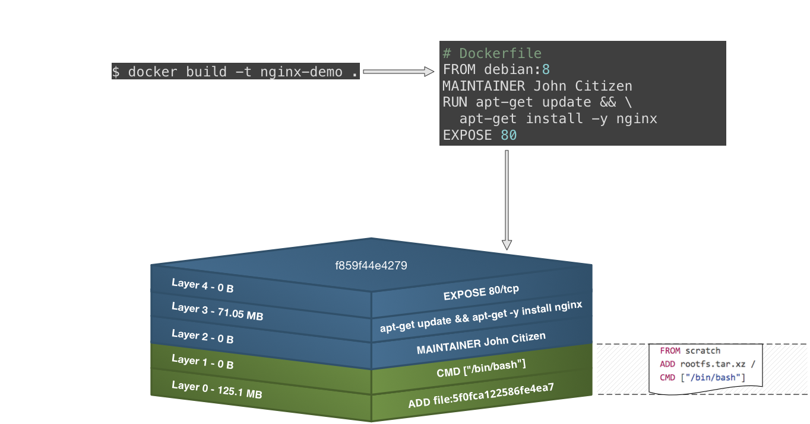

Docker in Practice
Topic
- What is Docker
- How to use Docker in our project
Topic 1
What is Docker
A bit of history
Intermodal shipping
Containers for applications -
"Black box"
Why is the black box so magical?
Why is the black box so magical?
- You don't care what's in it!
- You can have a generic set of tools allowing to manage any black box
- This reduces the cost of having more units of deployment...
- ...and also makes polyglot environments easier to manage
Why not VMs?
- They can work as a black box deployment unit after all!
- But they are comparitively much larger...
- ...and slow...
- ...and expensive
Containers as lightweight VMs
Image source: https://www.docker.com/whatisdockerContainers from a distance
Looks like a VM.....
- I can SSH into the container
- I have root access
- I can install packages
- I can mount filesystems
- I have my own eth0 interface
- I can alter iptables rules, and the routing table
So, why do we need Docker?
Why Docker?
We know that containers have been around for a while.
For example, LXC, BSD Jails, Solaris Zones...
So, what was missing?
- Containers did not have a standard format
- Standard tooling was missing
- No emphasis on re-use of components/APIs
What is Docker?
Why is Docker creating waves?
- Making containers easy to use
- Commoditization of container images
- Good, pluggable model allowing for multiple vendors to get involved
- Decent APIs, which allow the creation of higher-abstraction tools
- Coming at the same time as/reinforcing the ideas behind microservices
Docker Images
- Images:
- Images typically contain:
- You can find images in public registries (e.g. Docker Hub)
-
... read-only templates that are used to create containers
... constructed from layered filesystems
... each layer adds to or replaces part of the filesystem below it
-
... a lightweight OS distribution
... dependencies
... a single application or service
-
... or you even build your own!
Building images with a Dockerfile
- Build Docker images using a
Dockerfileand thedocker buildcommand - 1. Create a
Dockerfile:
FROM debian:8 MAINTAINER John Citizen RUN apt-get update && \ apt-get install -y nginx EXPOSE 80 CMD ["nginx", "-g", "daemon off;"] - 2. Build the image:
$ docker build -t nginx-demo . # Where `.` is the directory containing the `Dockerfile` - 3. Run in a container:
$ docker run -d -p 8080:80 nginx-demo
Image produced from Docker build
Slow motion replay...
Slow motion replay...
Slow motion replay...
Slow motion replay...
Slow motion replay...
Note: Docker 1.10 no longer uses a randomly generated UUID for layers -- this is replaced by a secure content hash
Docker Registries
- The artefact repository for images is called a Docker Registry
- You can find and retrieve images with
docker search(*) anddocker pull, respectively - You can publish your own images with
docker push - The default registry used by Docker is the cloud-based Docker Hub (supporting public and private repositories)
- Other options include: Docker Registry 2.0,
Docker Trusted Registry,
Artifactory,
Nexus,
Docker Container Registry,
and Quay.io
(*)
docker searchonly searches the Docker Hub but you can still search via the registry HTTP API
Docker architecture
 Image source: https://docs.docker.com/introduction/understanding-docker/
Image source: https://docs.docker.com/introduction/understanding-docker/
Topic 2
How to use docker in our projects
Docker images as build artefacts
- image is the new build artefact
- Same image goes from Dev -> QA -> Prod
Auto scaling now

Auto scaling use docker